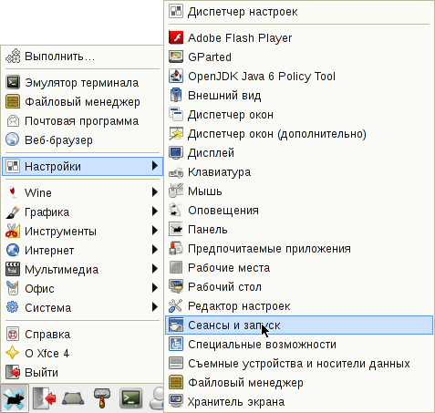
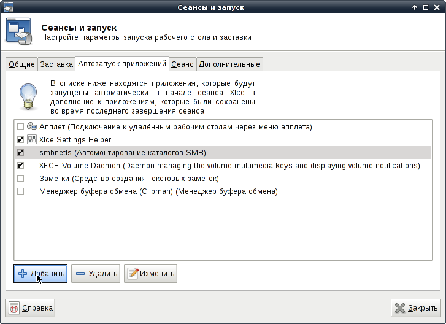
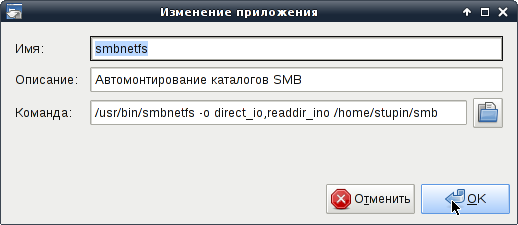
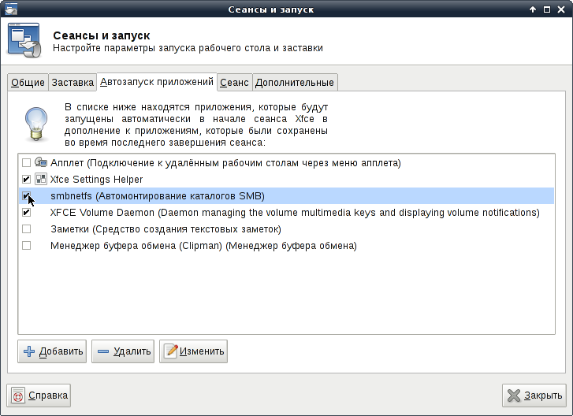
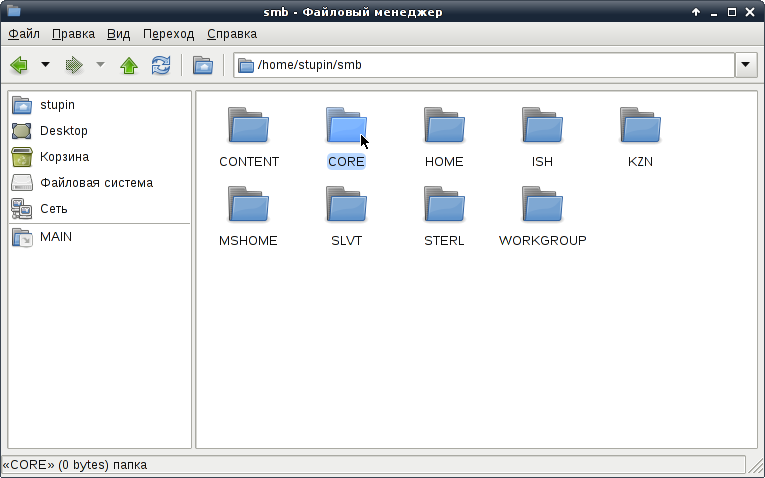

Каталоги SMB в Thunar можно открывать точно так же, как это было описано для SFTP. Если пользоваться этим не часто, то никаких затруднений обычно не возникает. В противном случае может оказаться удобнее воспользоваться пакетом smbnetfs, основанном на подсистеме FUSE. Дополнительный бонус - с сетевыми папками смогут работать обычные программы, не знающие о существовании GVFS.
Установим пакет smbnetfs:
# apt-get install smbnetfs
Добавим пользователя, который будет пользоваться пакетом, в группу fuse:
# usermod -aG fuse stupin
В домашнем каталоге пользователя создаём каталог с настройками:
$ mkdir .smb
А в нём - конфиг для подключения к серверам ~/.smb/smbnetfs.conf, содержащий учётные данные для подключения к сетевым каталогам.
Можно указать через косую черту сервер и каталог, для которого должны использоваться конкретные учётные данные следующим образом:
auth "SERVER/SHARE" "username" "password"
Вместо сервера с каталогом можно указать только имя сервера или только имя рабочей группы, вот так:
auth "SERVER" "username" "password" auth "WORKGROUP" "username" "password"
Для всех остальных подключений можно задать только имя и пароль:
auth "username" "password"
Я записал в этот файл нечто подобное:
auth "TRASH" "guest" "" auth "CORE/stupin" "password"
Не забудьте сделать файл с настройками доступным только самому владельцу:
$ chmod go= ~/.smb/smbnetfs.conf
Теперь осталось создать каталог, в который будет отображаться содержимое сети, и смонтировать представление SMB-сети в него.
$ mkdir ~/smb $ smbnetfs -o direct_io,readdir_ino ~/smb
Для автоматического монтирования сети при входе в XFCE, можно прописать следующую команду в автозапуск:
/usr/bin/smbnetfs -o direct_io,readdir_ino /home/stupin/smb
Открываем "Сеансы и запуск" в настройках XFCE:
Переходим на вкладку "Автозапуск приложений", добавляем новый элемент (на страничке ):
Вводим команду автозапуска и пояснительный текст:
Отмечаем этот элемент как активный:
Теперь сразу после входа под своей учётной записью можно зайти в каталог smb и увидеть содержимое сети. На первом уровне иерархии будут рабочие группы, потом серверы, потом общие каталоги, а далее - каталоги и файлы внутри общей папки. Для примера, снимок окна Thunar:
